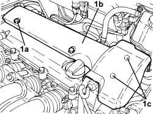

1016A10 SOUND-PROOFING COVER - R.R
- Path
- Procedures > 10 ENGINE > 1016 CYLINDER HEAD/S > 1016A TAPPET COVERS > 1016A10 SOUND-PROOFING COVER - R.R
- Kind
- repair procedure (removal / refitting; the operation number is the code)
- Applies to
- all engines; all production periods
- Interactive page
- https://sloeber94.github.io/elrnDB-aBrrSpdr/en/#/946001810
Applies to: engines: 3.2 JTS; all production periods
 Removing
Removing
 Refitting
Refitting1. Remove the engine oil filler cap.
2. Remove the sound insulation cover from the fastening pins.

Applies to: engines: 3.2 JTS; all production periods
Refitting
Removing- Place the soundproofing cover back in its housing and secure it using the pins.
- Place the engine oil filler cap in its housing.
Applies to: engines: 2.4 JTD 20v; all production periods
Removing
Refitting1. Release and remove the sound insulation cover from the retaining pins.

Applies to: engines: 2.4 JTD 20v; all production periods
Refitting
Removing- Place the sound insulation cover in position exerting manual pressure at the retaining pins.
Applies to: engines: 2.2 JTS; all production periods
Removing
Refitting1. Undo the bolts (1a) and remove sound insulation cover (1b) from the retaining pins (1c).

Applies to: engines: 2.2 JTS; all production periods
Refitting
Removing- Place the sound insulation cover in position exerting manual pressure at the retaining pins and tighten the bolts.
Topics that link to this page (71)
- 1004B10 POWER UNIT WITH MANUAL GEARBOX - R.R
- 1004B14 POWER UNIT WITH AUTOMATIC TRANSMISSION R + R
- 1008B10 POWER UNIT FRONT SUPPORT FLEXIBLE MOUNTING (TIMING SIDE) - REPLACE
- 1016A30 LEFT TAPPET COVER - R.R. AND REPLACE GASKET
- 1016A34 RIGHT TAPPET COVER - R.R. AND REPLACE GASKET
- 1016A36 LEFT AND RIGHT TAPPET COVER - R.R.
- 1032D12 TIMING SYSTEM PROTECTIVE COVER(S) - R + R
- 1036L30 FRONT OIL SEAL FOR CAMSHAFT IN CAMSHAFT HOUSING - REPLACE
- 1040B32 FRONT FUEL DELIVERY LINE - R.R.
- 1040B54 FRONT FUEL RETURN PIPE - R.R
- 1048A51 RIGID AIR INTAKE HOSE TO TURBOCHARGER - R.R
- 1056F50 COOLANT TEMPERATURE SENSOR - R.R.
- 1056F79 FUEL PIPE (DUPLEX) FROM PRESSURE PUMP TO FUEL MANIFOLD - R.R.
- 1060E50 FUEL PRESSURE REGULATOR - R.R.
- 1060F10 FUEL INJECTORS - R.R.
- 1060F20 PIPE FROM PRESSURE PUMP TO FUEL MANIFOLD - R.R.
- 1060F30 SINGLE FUEL MANIFOLD PIPE - R.R.
- 1060F36 PIPES (ALL) FROM FUEL MANIFOLD TO INJECTOR - R.R.
- 1060F50 FUEL RETURN MANIFOLD - R.R.
- 1060F51 FUEL HOSE FROM SINGLE MANIFOLD INJECTOR TO RETURN MANIFOLD - R.R.
- 1060F52 FUEL RETURN PIPE FROM INJECTORS - R.R.
- 1060G14 ENGINE COOLANT TEMPERATURE SENSOR - R.R.
- 1060G16 EXCESS PRESSURE SENSOR - R.R.
- 1060G22 CAM ANGLE SENSOR - R.R
- 1060G28 FUEL PRESSURE SENSOR ON FUEL MANIFOLD TO INJECTORS - R.R
- 1060G30 WATER PRESENCE SENSOR IN FUEL FILTER - R.R.
- 1060G31 FUEL PRESSURE REGULATOR ON SINGLE MANIFOLD TO INJECTORS - R R
- 1060G70 VACUUM RESEVOIR - R.R
- 1060G90 SYSTEM CABLE LOOM - R.R.
- 1064A22 VARIABLE GEOMETRY TURBOCHARGER R R
- 1072B60 THROTTLE SHAFT CONTROL VALVE FOR INLET PORTS R R
- 1072C44 EXHAUST MANIFOLD HEAT SHIELD - R+R
- 1080B62 CATALYTIC CONVERTER - R + R
- 1080B82 PARTICULATE FILTER DIFFERENTIAL PRESSURE (D.P.F.) SENSOR - R.R.
- 1080C24 E.G.R. SYSTEM SOLENOID - R + R
- 1080C80 EXHAUST GAS/WATER HEAT EXCHANGER FOR EGR SYSTEM - R.R
- 1080C83 EXHAUST GAS INLET PIPING FROM EXHAUST MANIFOLD TO HEAT EXCHANGER EGR - R R
- 1080D16 OIL VAPOUR PIPE FROM LEFT CYLINDER HEAD TAPPET COVER TO INTAKE CHAMBER - R.R.
- 1080D18 OIL VAPOUR PIPE FROM RIGHT CYLINDER HEAD TAPPET COVER TO INTAKE CHAMBER - R.R.
- 1080D34 ENGINE OIL VAPOUR SEPARATOR - R + R
- 1084A22 ENGINE OIL FILLER - R.R.
- 1084A42 ENGINE OIL PRESSURE WARNING LIGHT SWITCH - R + R
- 1084B30 ENGINE OIL FILTER - R.R
- 1084B40 ENGINE OIL DELIVERY PIPE TO TURBOCHARGER - R + R
- 1084B42 ENGINE OIL RETURN PIPE FROM TURBO - R + R
- 1088B20 ENGINE COOLING RADIATOR - R + R
- 1088C40 THERMOSTAT- R + R
- 1088D06 THREE-WAY CONNECTOR BETWEEN RADIATOR AND THERMOSTAT
- 1088D33 WATER PUMP FEED INTERMEDIATE PIPING - R R
- 1088D57 ENGINE COOLANT RETURN PIPE TO SUPPLY RESERVOIR - R.R.
- 1088E11 FANS WITH SINGLE ENGINE COOLING DUCT - R+R
- 1088E20 RESISTOR FOR RADIATOR COOLING FAN - R + R
- 1820B39 HOSE FROM CLUTCH RESERVOIR TO MASTER CYLINDER - R.R. FOR RIGHT HAND DRIVE VERSIONS
- 1820B45 RIGID DELIVERY PIPE FROM MASTER CYLINDER (PUMP) - R.R. FOR RIGHT HAND DRIVE VERSIONS
- 2110C50 GEAR SELECTION AND ENGAGEMENT UNIT - R.R.
- 2130A42 WATER SUPPLY/RETURN PIPES TO HEAT EXCHANGER - R.R.
- 3330C34 BRAKE FLUID RESERVOIR - R + R AND WASH INSIDE - VERSIONS WITH RIGHT HAND DRIVE AND ABS
- 3330D21 SINGLE-ACTING VALVE FOR BRAKE SERVO - R.R. FOR RIGHT HAND DRIVE VERSIONS
- 3330D26 VACUUM PIPE FOR BRAKE SERVO ASSEMBLY - R.R
- 3330D30 VACUUM UNIT - R+R
- 3340B53 RIGID PIPE (ONE) FROM MASTER CYLINDER (PUMP) TO ABS HYDRAULIC CONTROL UNIT - R.R. FOR RIGHT HAND DRIVE VERSIONS
- 4130B20 POWER STEERING PUMP - R.R.
- 4130B34 SUPPLY PIPE FROM FLUID RESEVIOR TO POWER STEERING PUMP - R.R.
- 4130B40 SUPPLY PIPE FROM PUMP TO POWER STEERING BOX - R.R.
- 5040A81 PIPE FROM EXPANSION VALVE TO CONDENSER AND COMPRESSOR FILLING R R
- 5040A82 PIPE FROM COMPRESSOR TO CONDENSER AND EXPANSION VALVE FITTING R R
- 5510C16 LEFT CYLINDER HEAD IGNITION COIL - R+R
- 5510C18 RIGHT CYLINDER HEAD IGNITION COIL - R+R
- 5520B10 STARTER MOTOR - R+R
- 5520C10 HEATER PLUGS - R+R
- 5550D22 REVERSING LIGHT SWITCH - R+R